最小化能耗促成足式机器人步态的涌现
Minimizing Energy Consumption Leads to the Emergence of Gaits in Legged Robots
第 1 页Page 1PDF p.1
Minimizing Energy Consumption Leads to the Emergence of Gaits in Legged Robots
最小化能量消耗促使足式机器人步态的涌现
Zipeng Fu1 , Ashish Kumar2 , Jitendra Malik2 , Deepak Pathak1 1Carnegie Mellon University, 2UC Berkeley
Zipeng Fu1 , Ashish Kumar2 , Jitendra Malik2 , Deepak Pathak1 1卡耐基梅隆大学，2加州大学伯克利分校
Abstract: Legged locomotion is commonly studied and expressed as a discrete set of gait patterns, like walk, trot, gallop, which are usually treated as given and pre-programmed in legged robots for efficient locomotion at different speeds. However, fixing a set of pre-programmed gaits limits the generality of locomotion. Recent animal motor studies show that these conventional gaits are only prevalent in ideal flat terrain conditions while real-world locomotion is unstructured and more like bouts of intermittent steps. What principles could lead to both structured and unstructured patterns across mammals and how to synthesize them in robots? In this work, we take an analysis-by-synthesis approach and learn to move by minimizing mechanical energy. We demonstrate that learning to minimize energy consumption plays a key role in the emergence of natural locomotion gaits at different speeds in real quadruped robots. The emergent gaits are structured in ideal terrains and look similar to that of horses and sheep. The same approach leads to unstructured gaits in rough terrains which is consistent with the findings in animal motor control. We validate our hypothesis in both simulation and real hardware across natural terrains. Videos at `https://energy-locomotion.github.io` .
摘要：足式运动通常被作为一组离散的步态模式进行研究和表达，例如走（walk）、慢跑/托步（trot）、奔驰（gallop），在足式机器人中，这些步态通常被视为既定的并进行预编程，以实现不同速度下的高效运动。然而，固定一套预编程的步态限制了运动的通用性。近期的动物运动研究表明，这些传统步态仅在理想的平坦地形条件下普遍存在，而现实世界中的运动是非结构化的，更类似于断断续续的单次步伐组合（bouts of intermittent steps）。什么样的原则能够贯穿哺乳动物并同时导致结构化和非结构化的模式？又如何在机器人中合成它们？在这项工作中，我们采用“在合成中分析”（analysis-by-synthesis）的方法，通过最小化机械能来学习运动。我们证明，学习最小化能量消耗在真实四足机器人于不同速度下涌现出自然运动步态中起着关键作用。涌现出的步态在理想地形上是结构化的，并且看起来与马和羊的步态相似。同样的方法在崎岖地形上会导致非结构化步态，这与动物运动控制的研究发现相一致。我们在自然地形上的仿真和真实硬件中均验证了我们的假设。视频见 `https://energy-locomotion.github.io` 。
Keywords: Locomotion, Biomechanics, Energetics, Reinforcement Learning
关键词：运动（Locomotion），生物力学（Biomechanics），能量学（Energetics），强化学习（Reinforcement Learning）
1 Introduction
1 引言
A common approach to understanding mammalian locomotion is to study it in terms of a set of discrete gaits. Seminal works include Muybridge [1]’s motion video of a galloping horse and Hildebrand [2]’s study of different gaits observed at different speeds. This has inspired research on replicating these gaits in robots by pre-programming them to achieve effective locomotion. This approach of pre-programming fixed gait patterns has lead to immense progress in robotic locomotion [3, 4, 5, 6].
理解哺乳动物运动的一种常用方法是根据一组离散步态对其进行研究。开创性的工作包括 Muybridge [1] 拍摄的奔马运动视频，以及 Hildebrand [2] 对在不同速度下观察到的不同步态的研究。这启发了通过在机器人中预编程这些步态以实现有效运动来复制它们的研究。这种预编程固定步态模式的方法在机器人运动领域取得了巨大进展 [3, 4, 5, 6]。
However, pre-programmed gaits limit the ability of legged systems to perform general locomotion in diverse terrains and at different speeds. Studies of motor control in both animals and human infants [7] in the last few decades have shown that general locomotion in natural settings is irregular and does not fit predefined fixed gaits. It is better defined in terms of bouts of steps than periodic cycles [8, 9]. That being said, we do see consistent regular patterns in ideal conditions when an animal is moving in a straight line over flat terrain at different speeds, e.g., walk, trot, canter, gallop, etc. [2, 10, 11, 12] and these patterns are shared across species of diverse animals [13]. How do we reconcile these seemingly contradictory arguments about unstructured locomotion patterns on complex terrains with that of regular patterns seen in flat terrains under the same rubric?
然而，预编程步态限制了足式系统在多变地形和不同速度下执行通用运动的能力。在过去几十年中，对动物和人类婴儿运动控制的研究 [7] 表明，自然环境下的通用运动是不规则的，并不符合预定义的固定步态。将其定义为单次步伐组合（bouts of steps）比周期性循环（periodic cycles）更为合适 [8, 9]。尽管如此，在动物以不同速度在平坦地形上沿直线运动的理想条件下，我们确实能看到一致的规则模式，例如常步/漫步（walk）、快步/慢跑（trot）、跑步（canter）、奔驰（gallop）等 [2, 10, 11, 12]，并且这些模式在不同动物物种之间是共享的 [13]。我们如何在同一准则下调和这些关于复杂地形上非结构化运动模式与平坦地形上规则模式之间看似矛盾的论点？
One way to make sense of these differences is to see them from the lens of minimizing energy consumption. Locomotion consumes a significant fraction of an animal’s metabolic energy budget which suggests that there would be evolutionary selection pressure for locomotion strategies that minimize energy consumption. Indeed, this has been a focus of several studies in biomechanics and energetics. Hoyt and Taylor [12] used energy minimization to explain why animals switch from one gait to another as their speed increases. Similar studies explain gaits across different animals including humans [14, 15]. However, most of the biomechanics studies are limited to the straight-line motion of animals in ideal flat terrains. Furthermore, these studies take gaits as given and offer simplified analytical models to explain them from an energy perspective without any statement about their synthesis on relatively complex real robot systems.
理解这些差异的一种方法是从最小化能量消耗的角度来审视它们。运动消耗了动物代谢能量预算的很大一部分，这表明存在促使能量消耗最小化的运动策略的演化选择压力。事实上，这已经是生物力学和能量学中若干研究的焦点。Hoyt 和 Taylor [12] 利用能量最小化解释了为什么动物会随着速度的增加从一种步态切换到另一种步态。类似的研究解释了包括人类在内的不同动物的步态 [14, 15]。然而，大多数生物力学研究仅限于理想平坦地形下动物的直线运动。此外，这些研究将步态视为既定的，并提供简化的解析模型来从能量角度解释它们，而未涉及其在相对复杂的真实机器人系统上的合成。
展开第 1 页原版整页（含全部图表、公式与页眉页脚）
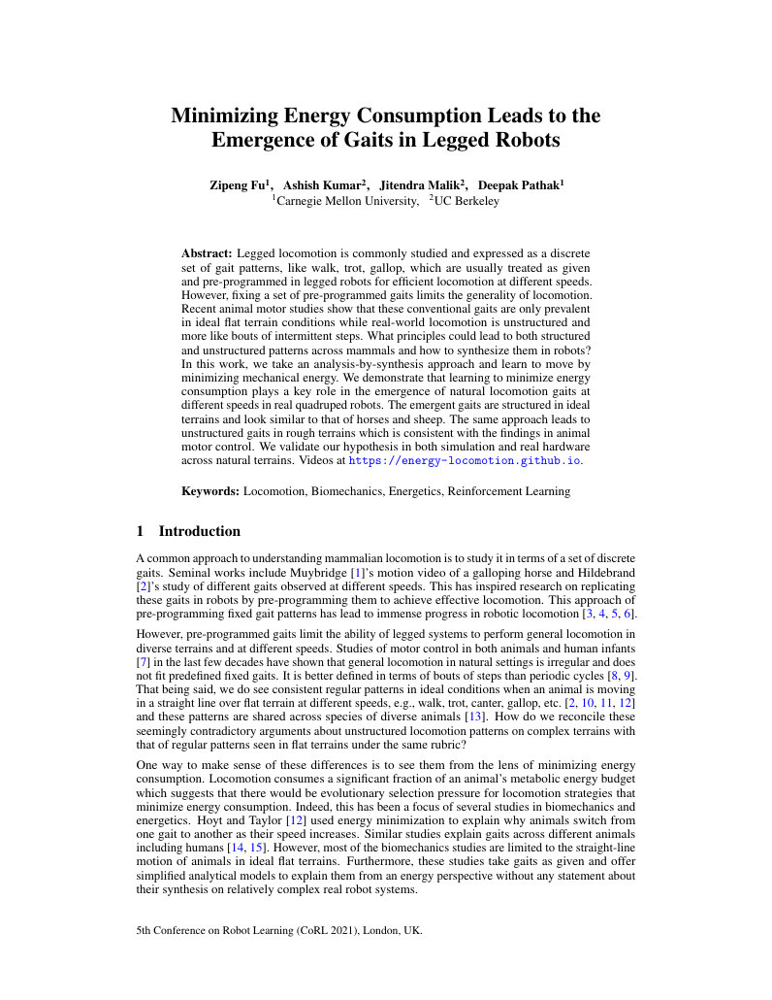
第 2 页Page 2PDF p.2

Figure 1: We demonstrate via analysis-by-synthesis approach that learning to move forward by minimizing energy consumption plays a key role in the emergence of natural locomotion patterns in quadruped robots. We do not pre-program any primitives for leg motions and the policy directly output desired joint angles. `Top` : Bio-energetics driven learning on flat terrain leads to different gaits namely walk, trot and bounce (similar to gallop) as the speed increases. Our high-speed bounce gait displays an emergent flight phase despite low energy usage. This corresponds to the nearest animals (sheep/horse) with similar Froude numbers. `Bottom` : The same pipeline on diverse uneven terrains leads to unstructured gait as is true in general animal locomotion. Please see videos on the website.
图 1：我们通过“在合成中分析”的方法证明，通过最小化能量消耗来学习向前移动，在四足机器人自然运动模式的涌现中起着关键作用。我们不对腿部运动预编程任何基元，策略直接输出期望的关节角度。`上方`：在平坦地形上由生物能量学驱动的学习会随着速度增加产生不同的步态，即走（walk）、慢跑（trot）和弹跳（bounce，类似于奔驰）。尽管能耗较低，我们的高速弹跳步态仍展现出涌现的腾空相（flight phase）。这与具有相似弗劳德数（Froude numbers）的最接近的动物（羊/马）相对应。`下方`：在多样化的不平整地形上的相同流程会导致非结构化步态，正如一般动物运动中的真实情况一样。请在网站上观看视频。
In this work, we take an analysis-by-synthesis approach to show how energy minimization leads to the emergence of structured locomotion gait patterns in flat terrains as well as unstructured gaits in complex terrains. We use energetics to design an end-to-end learning framework and display the resulting gait patterns in a real quadruped robot. We employ model-free reinforcement learning as the optimizer to learn controllers to make the quadruped move forward while simultaneously minimizing the bio-energetics constraints of minimizing work [16]. We train our policies on simple fractal terrains with varying frequency of terrain heights instead of perfectly flat terrain. This mimics the real world more closely and achieves efficient and robust gaits without the need for artificial rewards for foot clearance or periodic external push during training. Low frequency fractal terrains resemble the simple flat terrain settings and high frequency simulates complex terrains. In addition, we present a learning pipeline that enables smooth gait transitions given changing target speeds by combining RL rewards and distillation losses from trained expert gait policies. We then transfer the policies onto the real robot using online adaptation at test time [17].
在这项工作中，我们采用“在合成中分析”的方法，展示了能量最小化如何促使平坦地形上结构化运动步态模式以及复杂地形上非结构化步态的涌现。我们利用能量学设计了一个端到端学习框架，并在真实的四足机器人上展示了生成的步态模式。我们采用无模型强化学习作为优化器来学习控制器，使四足机器人向前移动，同时最小化做功这一生物能量学约束 [16]。我们在具有不同地形高度频率的简单分形地形上训练策略，而非完全平坦的地形。这更贴近现实世界，无需在训练过程中引入足端离地高度（foot clearance）的人工奖励或周期性外力推挤，即可实现高效且鲁棒的步态。低频分形地形类似于简单的平坦地形设置，高频分形地形则模拟复杂地形。此外，我们提出了一种学习流程，通过结合强化学习奖励和来自已训练专家步态策略的蒸馏损失，在目标速度变化时实现平滑的步态过渡。随后，我们在测试时利用在线自适应将策略迁移到真实机器人上 [17]。
We further analyze our emergent walking behaviors by comparing them to biological quadrupeds. Our quadruped robot is closest to sheep and horse in terms of physicality as determined by the Froude number [18] which is a scalar metric characterizing gaits of quadrupeds (discussed more in Section 4.2). Therefore, energetics-based training leads to similar three gaits in our robot as found in horses and sheep, namely, walk, trot and gallop as the speed is gradually increased in flat terrains Figure 1. Interestingly, we show that the gait selection is inherently linked with the speed of the robot. For instance, trotting is only energy efficient around the medium speed of 0.9m/s. If we increase or decrease the speed of the robot, it takes more energy for trot than to gallop (similar to bouncing gait) or walk as shown in Figure 2. Finally, when the same pipeline is run in uneven complex terrains, it leads to unstructured gaits as consistent with animal locomotion in usual diverse conditions [9, 8].
我们通过将涌现出的行走行为与生物四足动物进行比较，进一步对其进行了分析。根据表征四足动物步态的标量度量——弗劳德数（Froude number）[18]（在第 4.2 节中将进一步讨论），我们的四足机器人在身体物理特性上最接近羊和马。因此，在平坦地形上随着速度逐渐增加，基于能量学的训练在我们的机器人中诱导出了与马和羊相似的三种步态，即常步（walk）、快步（trot）和奔驰（gallop），如图 1 所示。有趣的是，我们展示了步态选择与机器人的速度内在相关。例如，快步/托步（trotting）仅在中等速度 0.9m/s 左右是高能效的。如果我们增加或降低机器人的速度，快步相比奔驰（类似于弹跳步态）或常步会消耗更多能量，如图 2 所示。最后，当相同的流程在不平整的复杂地形上运行时，它会导致非结构化步态，这与常见多变条件下的动物运动一致 [9, 8]。
Prior works have used energy penalty to obtain energy-efficient gaits [19, 20] but have not shown the correspondence to different gaits at different speeds. Furthermore, out of these works, the ones which deploy these gaits on a real robot either use a predefined hand-coded gait library, use reference motions [19], or only learn high-level contact sequences for a predefined swing leg motion [21].
先前的研究利用能量惩罚来获得高能效步态 [19, 20]，但尚未展示在不同速度下与不同步态的对应关系。此外，在这些工作中，将步态部署到真实机器人上的方法要么使用预定义的手写步态库、使用参考运动 [19]，要么仅针对预定义的摆动腿运动学习高层接触序列 [21]。
展开第 2 页原版整页（含全部图表、公式与页眉页脚）
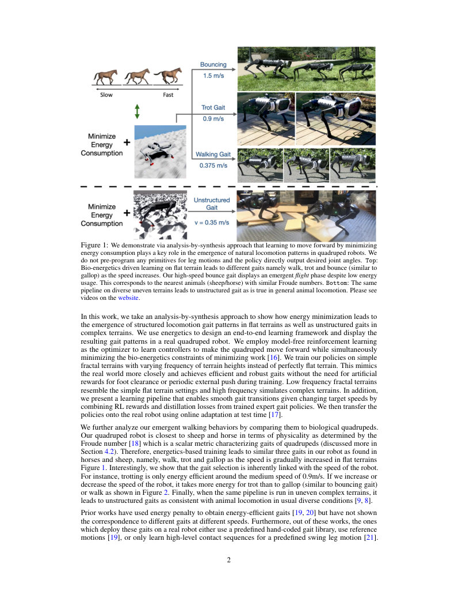
第 3 页Page 3PDF p.3
These approaches have some fundamental limitations in contrast to what we propose. Firstly, the use of predefined foot motions never optimize for efficient swing leg motions, and using reference trajectories gives gaits that look realistic, but are not necessarily energy-efficient for the specific robot we have. Second, learning controllers end to end without the use of any priors (reference motions or predefined motions) allows for the possibility of learning behaviors that don’t follow any predefined gaits. We show the robustness of this complex terrain policy by successfully deploying it in complex terrains in the real world.
与我们提出的方法相比，这些方法存在一些根本性的局限性。首先，使用预定义的足部运动从未对高效的摆动腿运动进行优化，而使用参考轨迹产生的步态看起来逼真，但对于我们特定的机器人来说并不一定是高能效的。其次，在不使用任何先验（参考运动或预定义运动）的情况下端到端学习控制器，使得学习不遵循任何预定义步态的行为成为可能。我们通过在真实世界的复杂地形中成功部署该复杂地形策略，展示了其鲁棒性。
The main contributions of this paper include:
本文的主要贡献包括：
- Show that minimizing energy consumption plays a key role in the emergence of natural locomotion patterns in both flat as well as complex terrains at different speeds without relying on demonstrations or predefined motion heuristics.
- 表明最小化能量消耗在平坦及复杂地形、不同速度下自然运动模式的涌现中起着关键作用，而无需依赖示范或预定义的运动启发式规则。
- Show that the emergent gaits at different target speeds correspond to conventional animals in the similar Froude number range (sheep/horse) without any sort of pre-programming.
- 表明在不同目标速度下涌现的步态与处于相似弗劳德数范围内的传统动物（羊/马）相对应，无需任何形式的预编程。
- Present a distillation-based learning pipeline to obtain velocity-conditioned policy that displays smooth gait transition as the target speed is changed.
- 提出了一种基于蒸馏的学习流程，以获得以速度为条件的策略，该策略在目标速度发生变化时表现出平滑的步态过渡。
- Demonstrate the emergent behaviors, robustness analysis, and gait patterns in simulation as well as a real-world budget quadruped robot.
- 在仿真以及真实世界的经济型四足机器人上展示了涌现行为、鲁棒性分析和步态模式。
2 Method
2 方法
2.1 Claim: Energy Minimization leads to Emergence of Natural Gaits
2.1 主张：能量最小化导致自然步态的涌现
We would like to validate that indeed certain gaits will emerge at certain speeds if we minimize the energy consumption. To do so, on the right, we plot the energy consumption vs speed of the A1 robot in simulation for walk, trot and bounce (modification of gallop/canter) gaits. We use [6] to achieve the different gaits by hard-coding the contact sequences for walk, trot and bounce. This plot is qualitatively similar to the plot in [12], which shows the energy consumption of different horse gaits across different speeds. We additionally plot the energy consumption of the three policies we get from our approach at different speeds (0.375 m/s, 0.9 m/s, 1.5 m/s). This plot shows two things. First, it is observed that certain gaits are only efficient at certain speeds and using them for other speeds is suboptimal. For instance, walk is optimal at low speeds with transition to trot and bounce. Secondly, we observe that our learning framework converges to the optimal gait at each of the speeds, and beats the efficiency of MPC gaits from [6], which does not optimize the swing foot trajectory for energy. Details of MPC method are in the supplementary.
我们希望验证：如果最小化能量消耗，确实会在特定速度下涌现出特定步态。为此，在右侧，我们绘制了 A1 机器人在仿真中以常步（walk）、快步（trot）和弹跳（bounce，奔驰/快跑的变形）步态运动时的能量消耗与速度关系曲线。我们利用 [6] 通过硬编码常步、快步和弹跳的接触序列来实现这些不同的步态。该图在定性上与 [12] 中的曲线图相似，后者展示了不同速度下不同马步态的能量消耗。我们还额外绘制了通过我们的方法在不同速度（0.375 m/s, 0.9 m/s, 1.5 m/s）下获得的三个策略的能量消耗。该图表明了两点：首先，可以观察到某些步态仅在特定速度下高效，将其用于其他速度是次优的。例如，常步在低速下最优，随后过渡到快步和弹跳。其次，我们观察到我们的学习框架在每个速度下都能收敛到最优步态，并且其效率超过了来自 [6] 的 MPC 步态，后者并未针对能量优化摆动足轨迹。MPC 方法的详细信息见补充材料。
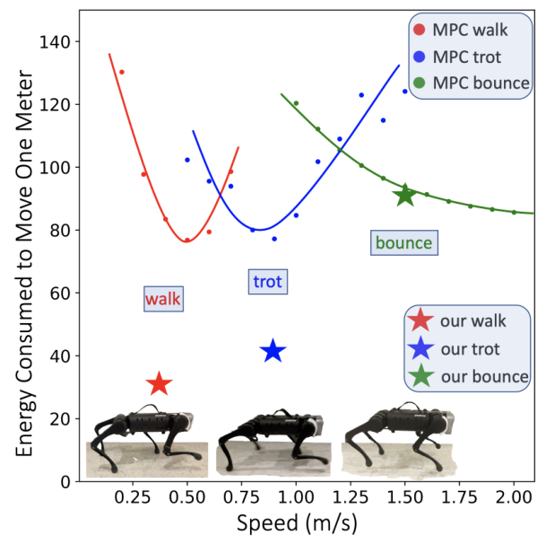
Figure 2: Energy consumed in moving 1m distance using our method and MPC shows why certain gaits are stable at certain speeds. Videos on the website.
图 2：使用我们的方法和 MPC 在移动 1 米距离时消耗的能量展示了为什么某些步态在特定速度下是稳定的。视频见网站。
2.2 Learning Locomotion Policy
2.2 学习运动策略
We learn the locomotion policy \(pi\) which takes as input the current state \(x_t \in \mathbb{R}^{30}\) , previous action \(a_{t-1} \in \mathbb{R}^{12}\) to predict the next action \(a_t\) (Equation 1). The predicted action \(a_t\) is the desired joint position for the 12 robot joints which is converted to torque using a PD controller.
我们学习运动策略 \(pi\) ，它以当前状态 \(x_t \in \mathbb{R}^{30}\) 、前一动作 \(a_{t-1} \in \mathbb{R}^{12}\) 作为输入来预测下一个动作 \(a_t\) （公式 1）。预测的动作 \(a_t\) 是针对 12 个机器人关节的期望关节位置，该位置使用 PD 控制器转换为力矩。
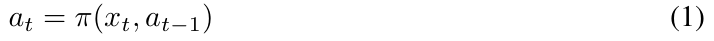
We implement \(pi\) as MLPs (details in Section 3) and train the base policy \(pi\) end to end using model-free reinforcement learning. At time step \(t\) , \(pi\) takes the current state \(x_t\) , previous action \(a_{t-1}\) to predict an action \(a_t\) . RL maximizes the following expected return of the policy \(pi\) :
我们将 \(pi\) 实现为多层感知机（MLP，细节见第 3 节），并使用无模型强化学习端到端地训练基础策略 \(pi\) 。在时间步 \(t\) ，\(pi\) 接收当前状态 \(x_t\) 、前一动作 \(a_{t-1}\) 来预测动作 \(a_t\) 。强化学习最大化策略 \(pi\) 的以下期望回报：
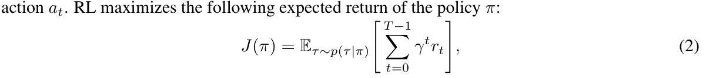
展开第 3 页原版整页（含全部图表、公式与页眉页脚）
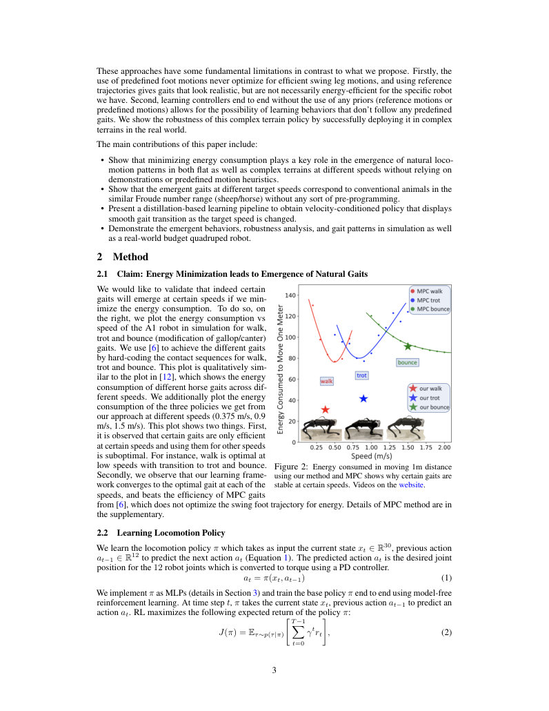
第 4 页Page 4PDF p.4
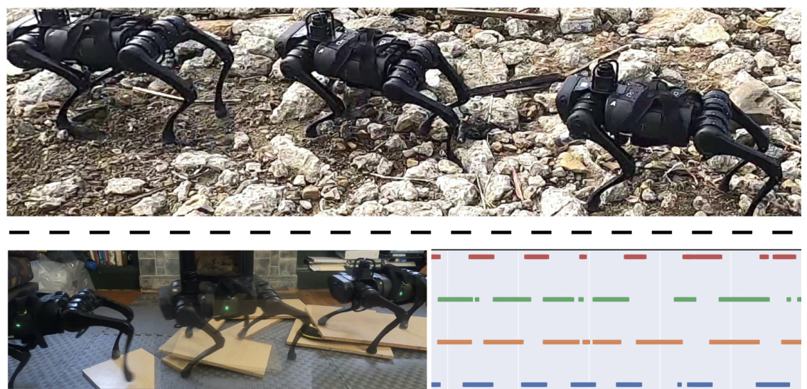
Figure 3: Complex real-world behaviors at the low speed in 2 settings. `Top` : key frames on rocky terrain. `Bottom` : Foot contact plots and key frames on unstable moving planks. Videos on the website.
图 3：在 2 种设置下低速时的复杂现实世界行为。`上方`：岩石地形上的关键帧。`下方`：不稳定移动木板上的足底接触图和关键帧。视频见网站。
where \(\tau = \{(x_0, a_0, r_0), (x_1, a_1, r_1) . . .\}\) is the trajectory of the agent when executing policy \(pi\) , and \(p(\tau|\pi)\) represents the likelihood of the trajectory under \(pi\) .
其中 \(\tau = \{(x_0, a_0, r_0), (x_1, a_1, r_1) . . .\}\) 是智能体执行策略 \(pi\) 时的轨迹，\(p(\tau|\pi)\) 表示在该策略 \(pi\) 下轨迹的似然度。
2.3 Stable Gait through Natural Constraints
2.3 通过自然约束实现稳定步态
We train our agent with the following natural constraints. First, the reward function is motivated from bio-energetic constraints of minimizing work [16]. We found these reward functions to be critical for learning realistic gaits in simulation. Second, we train our policies on uneven terrain (Figure 1) as a substitute for additional rewards used by [22] for foot clearance and robustness to external push. We see that these constraints are enough to achieve all the gaits and results we demonstrate in this paper.
我们利用以下自然约束训练智能体。首先，奖励函数源自最小化做功的生物能量学约束 [16]。我们发现这些奖励函数对于在仿真中学习逼真的步态至关重要。其次，我们在不平整地形（图 1）上训练我们的策略，以替代 [22] 中用于足端离地高度和对外力推挤鲁棒性的额外奖励。我们看到这些约束足以实现我们在本文中展示的所有步态和结果。
2.4 Energy Consumption-Based Reward
2.4 基于能量消耗的奖励
Let’s denote the linear velocity as \(v\) and the angular velocity as \(\omega\) , both in the robot’s base frame. We additionally define joint torques as \(\boldsymbol{\tau}\) and joint angles as \(\boldsymbol{q}\) and joint velocities as \(\boldsymbol{\dot{q}}\) . We define our reward as sum of the following three terms:
我们用 \(v\) 表示线速度，用 \(\omega\) 表示角速度，二者均在机器人机体坐标系中表示。我们另外将关节力矩定义为 \(\boldsymbol{\tau}\) ，关节角度定义为 \(\boldsymbol{q}\) ，关节速度定义为 \(\boldsymbol{\dot{q}}\) 。我们将奖励定义为以下三项之和：
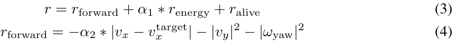
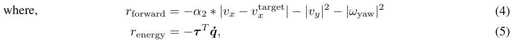
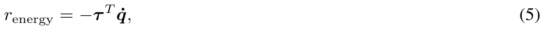
\(r_{\mathrm{forward}}\) rewards the agent for walking straight at the specified speed, \(r_{\mathrm{energy}}\) penalizes energy consumption and \(r_{\mathrm{alive}}\) is the survival bonus.
\(r_{\mathrm{forward}}\) 奖励智能体以指定速度直线行走，\(r_{\mathrm{energy}}\) 惩罚能量消耗，\(r_{\mathrm{alive}}\) 是存活奖励。
We use simple rules to set the hyper-parameters. At a given target linear speed \(v^{\mathrm{target}}_{x}\) , the survival bonus \(c\) is set to \(20 * v^{\mathrm{target}}_{x}\) . We set \(\alpha_1 = 0.04\), and \(\alpha_2 = 20\) across all settings.
我们使用简单的规则来设置超参数。在给定的目标线速度 \(v^{\mathrm{target}}_{x}\) 下，存活奖励 \(c\) 设置为 \(20 * v^{\mathrm{target}}_{x}\) 。在所有设置中，我们将 \(\alpha_1\) 设为 0.04，\(\alpha_2\) 设为 20。
We estimate the unit energy consumption per time step by summing the instantaneous power of the 12 motors by multiplying the torque and the joint velocity at each motor. Also notice that this reward is much more concise than those used in prior works. We discuss the role of minimizing energy consumption in Section 4.4.
我们通过将每个电机上的力矩和关节速度相乘，计算 12 个电机的瞬时功率总和，从而估计每个时间步的单位能量消耗。还要注意，此奖励比先前工作中使用的奖励要简洁得多。我们在第 4.4 节中讨论了最小化能量消耗的作用。
2.5 Sim to Real Transfer
2.5 仿真到真实的迁移
For simulation to real transfer, we use RMA [17] which consists of the an adaptation module on top of the base policy. During deployment, the adaptation module uses the state history to estimate the vector of extrinsics (which contains environment information) online. Once the base policy is learned using RL, this adaptation module can be trained in simulation itself using supervised learning with the true extrinsics parameters as supervision. The environment perturbations we train on is listed in Table 1.
对于仿真到真实的迁移，我们使用 RMA [17]，它由基础策略之上的自适应模块组成。在部署期间，自适应模块使用状态历史在线估计外在环境参数向量（包含环境信息）。一旦使用强化学习学得基础策略，就可以使用真实外在环境参数作为监督，直接在仿真中使用监督学习训练该自适应模块。我们训练所用的环境扰动列于表 1 中。
3 Experimental Setup and Training Details
3 实验设置与训练细节
Hardware and Simulation: We use Unitree’s A1 robot as our hardware platform [23] and use its A1 URDF [23] to simulate the A1 robot in RaiSim simulator [24]. The full details of terrain and environment setup are provided in supplementary due to space constraints.
硬件与仿真：我们使用宇树科技的 A1 机器人作为我们的硬件平台 [23]，并使用其 A1 URDF [23] 在 RaiSim 仿真器 [24] 中模拟 A1 机器人。由于篇幅限制，地形和环境设置的完整细节在补充材料中提供。
展开第 4 页原版整页（含全部图表、公式与页眉页脚）
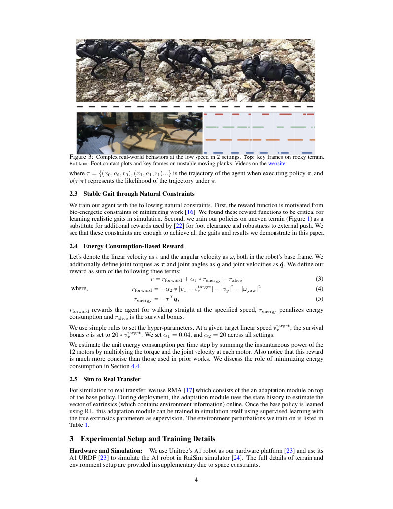
第 5 页Page 5PDF p.5
(a) Walking gait for a 10-second period
(a) 10 秒时间段内的常步步态
(c) Trotting gait for a 10-second period
(c) 10 秒时间段内的快步步态
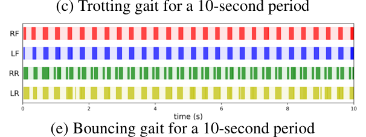
(b) Walking gait for a 2-second period
(b) 2秒时段内的行走步态
(d) Trotting gait for a 2-second period
(d) 2秒时段内的小跑步态
(e) Bouncing gait for a 10-second period (f) Bouncing gait for a 2-second period Figure 4: Foot contact plots for walking, trotting and bouncing gait of A1 robot in the real world. Bold color means the corresponding foot is in contact with the ground and the light color means the foot is in the air. (RF: Right-Front foot, LF: Left-Front foot, RR: Right-Rear foot, LR: Left-Rear foot)
(e) 10秒时段内的弹跳步态 (f) 2秒时段内的弹跳步态 图4：现实世界中A1机器人在行走、小跑和弹跳步态下的足端接触图。深色表示对应的足端与地面接触，浅色表示足端处于悬空状态。（RF：右前足，LF：左前足，RR：右后足，LR：左后足）
State-Action Space: The state is 30 dimensional containing the joint positions (12 values), joint velocities (12 values), roll and pitch of the torso and binary foot contact indicators (4 values). The action space is 12 dimensional corresponding to the target joint position for the 12 robot joints. The predicted target joint angles \(a = \hat{\mathbf{q}} \in \mathbb{R}^{12}\) is converted to torques \(\boldsymbol{\tau}\) using a PD controller with target joint velocities set to 0.
状态-动作空间：状态为30维，包含关节位置（12个值）、关节速度（12个值）、躯干的横滚角和俯仰角以及二值足端接触指示（4个值）。动作空间为12维，对应于机器人12个关节的目标关节位置。预测的目标关节角 \(a = \hat{\mathbf{q}} \in \mathbb{R}^{12}\) 通过目标关节速度设为0的PD控制器转换为力矩 \(\boldsymbol{\tau}\)。
Environmental Variations: All environmental variations with their ranges are listed in Table 1. Policies with simple terrain and mild environment variations achieve walking, trotting and bouncing gaits. To deploy our robot in the complex terrain, we use aggressive environment randomization with sharper fractal terrains which gives us the unstructured walking terrain.
环境变化：表1中列出了所有环境变化及其范围。具有简单地形和温和环境变化的策略实现了行走、小跑和弹跳步态。为了将我们的机器人部署在复杂地形中，我们采用了具有更陡峭分形地形的激进环境随机化，从而为我们提供了非结构化行走地形。
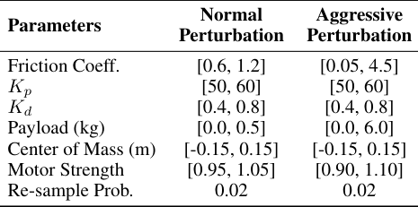
Table 1: Ranges of the environment parameters in simulation. Normal perturbation is used for regular gait emergence. Aggressive perturbation is used for unstructured gait emergence.
表1：仿真中环境参数的范围。常规扰动用于规则步态涌现。激进扰动用于非结构化步态涌现。
Policy Learning: The policy is a multi-layer perceptron with 3 layers which takes in the current state \(x_t \in \mathbb{R}^{30}\), previous action \(a_{t-1} \in \mathbb{R}^{12}\) and outputs 12-dim target joint angles. The hidden layers have 128 units. We train the policy and the environment encoder network using
策略学习：该策略为一个3层的多层感知机，输入当前状态 \(x_t \in \mathbb{R}^{30}\)、上一动作 \(a_{t-1} \in \mathbb{R}^{12}\)，输出12维目标关节角。隐藏层包含128个单元。我们训练该策略和环境编码器网络使用
PPO [25]. The training runs for \(15,000\) iterations with a batch size of \(100,000\) split into \(4\) minibatches and learning rate \( = 5\mathrm{e}{-4}\). We train for a total of 1.5 billion samples which takes roughly \(24\) hours on a desktop machine with 1 GPU.
PPO [25]。训练运行\(15,000\)次迭代，批次大小为\(100,000\)，分为\(4\)个小批次，学习率 \( = 5\mathrm{e}{-4}\)。我们总共训练了15亿个样本，在一台配备单GPU的台式机上大约耗时\(24\)小时。
4 Results and Analysis
4 结果与分析
4.1 Emergence of Locomotion Patterns in Complex Terrain
4.1 复杂地形中运动模式的涌现
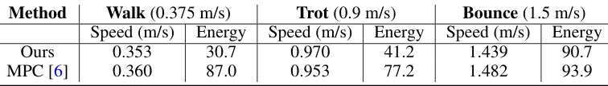
We analyze the performance of the walking policy on complex terrain with aggressive perturbations in the real world (videos on website). We show two uneven terrain deployments of our method in Figure 3. During the deployment of the robot in the rocky terrain, we see that the robot roughly follows the walk-
我们分析了现实世界中行走策略在具有激进扰动的复杂地形上的表现（视频见网站）。我们在图3中展示了我们方法在两种崎岖地形上的部署。在机器人于岩石地形的部署过程中，我们看到机器人大致遵循行-
Table 2: We show the actual speeds and energy consumed to move one meter of the our method and convex MPC, which does not directly optimize for energy efficiency, for walking gait at target speed 0.375 m/s, trotting gait at target speed 0.9 m/s, and bouncing gait at target speed 1.5 m/s in simulation. Our method shows the advantages in energy consumption in all gaits.
表2：我们展示了在仿真中，我们的方法与未直接针对能效进行优化的凸MPC（convex MPC），在目标速度为0.375 m/s的行走步态、目标速度为0.9 m/s的小跑步态以及目标速度为1.5 m/s的弹跳步态下，移动一米所需的实际速度和消耗能量。我们的方法在所有步态中均表现出能耗方面的优势。
ing gait while stepping over rocks of different heights which prematurely terminate the swing motion of the leg. Consequently, the gait we observe is an unstructured walking gait. We further analyse this in another deployment on unstable planks which move as the robot tries to cross it (see video).
走步态，同时跨越不同高度的岩石，这些岩石会过早终止腿部的摆动运动。因此，我们观察到的步态是一种非结构化行走步态。我们在另一个不稳定木板的部署中进一步分析了这一点，当机器人试图穿过木板时，木板会发生移动（见视频）。
展开第 5 页原版整页（含全部图表、公式与页眉页脚）
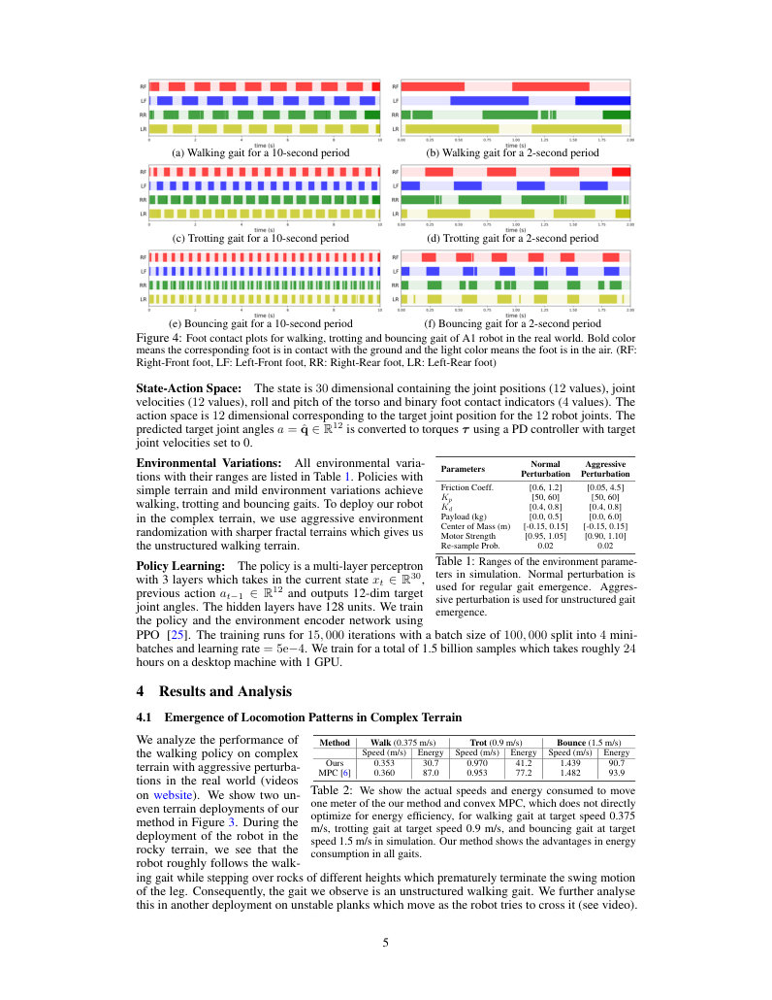
第 6 页Page 6PDF p.6
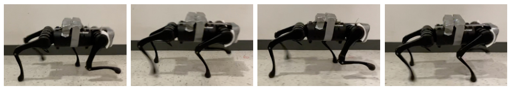
Figure 5: Trotting with 1 kg payload (two bottles of 500 ml water are strapped onto the robot). The 1 kg payload is out of the normal perturbation of environment parameters used in simulation training shown in Table 1. We show qualitative and gait patterns for other two gaits in the appendix. We find that the gait patters are robust and remain the same even in the presence of disturbances.
图5：负载1 kg时的小跑（两瓶500 ml的水被绑在机器人上）。1 kg负载超出了表1所示仿真训练中使用的环境参数常规扰动范围。我们在附录中展示了另外两种步态的定性结果和步态模式。我们发现步态模式具有鲁棒性，即使在存在扰动的情况下仍保持不变。
The foot contact plot for this setup is not periodic and changes depending on the complexity of the terrain. In the video, this can been seen when the front right foot of the robot steps on an unstable plank which moves as a result, but to maintain stability, the robot violates the periodic gait notions automatically.
该设置下的足端接触图不是周期性的，并且会根据地形的复杂程度而改变。在视频中可以看到，当机器人的右前足踏上不稳定的木板并导致其移动时，为了保持稳定性，机器人会自动打破周期性步态的概念。
4.2 Emergence of Walking, Trotting and Bouncing
4.2 行走、小跑和弹跳的涌现
Simulation Gaits: We train 3 separate policies for 3 target speeds - 0.375 m/s (low), 0.9 m/s (median) and 1.5 m/s (high) in simulation. We use the same hyper-parameters across all target speeds. We observe that the walking gait emerges at target speed 0.375 m/s, trotting emerges at 0.9 m/s and hopping emerges at 1.5 m/s in simulation. Note that we use RMA [17] (Section 2.5) to transfer our policies to the real world without any fine-tuning. We observe the same foot contact sequence in the real world as in simulation. In Table 2, we compare the performance of our policies with MPC [6] and observe that our walking gait can achieve accurate speed tracking while being 50% more energy efficient than the MPC baseline.
仿真步态：我们在仿真中针对3个目标速度训练了3个独立的策略——0.375 m/s（低速）、0.9 m/s（中速）和1.5 m/s（高速）。我们在所有目标速度下使用相同的超参数。我们观察到在仿真中，行走步态在0.375 m/s的目标速度下涌现，小跑在0.9 m/s下涌现，跳跃在1.5 m/s下涌现。注意，我们使用RMA [17]（第2.5节）在没有任何微调的情况下将我们的策略迁移到现实世界。我们在现实世界中观察到了与仿真中相同的足端接触序列。在表2中，我们将我们策略的性能与MPC [6]进行了比较，观察到我们的行走步态能够实现精确的速度跟踪，同时比MPC基线能效高出50%。
Real-World Behaviors: At the low speed (0.375 m/s), the robot demonstrates a quarter-off walking gait with the following foot contact sequence: Right-Front (RF), Left-Rear (LR), Left-Front (LF) and Right-Rear (RR). At the median speed (0.9 m/s), two beat trot gait emerges where diagonal legs (RF & LR or LF & RR) are synchronized and hit the ground at the same time. At the high speed (1.5 m/s), the policy converges to bouncing with approximately half the gait cycle as flight phase. Key frames of the 3 gaits are shown in Supplementary and the foot contact plots in Figure 4. We use the foot contact sensor reading from the A1 robot to generate these plots.
现实世界行为：在低速（0.375 m/s）下，机器人表现出四分之一相位差的行走步态，其足端接触序列如下：右前（RF）、左后（LR）、左前（LF）和右后（RR）。在中速（0.9 m/s）下，涌现出两拍小跑步态，其中对角腿（RF与LR或LF与RR）同步并同时着地。在高速（1.5 m/s）下，策略收敛为大约有一半步态周期处于腾空相的弹跳步态。3种步态的关键帧见补充材料，足端接触图见图4。我们使用A1机器人的足端接触传感器读数生成这些图表。
We also measured the actual speed of the robot in the real world by taking the average of 3 trials per target speed. In each trial, we log the total distance divided by total time taken to traverse. The average real-world speeds are 0.396 m/s at target speed 0.375 m/s, 0.914 m/s at target speed 0.9 m/s, and 1.714 m/s at target speed 1.5 m/s. The average real-world speeds closely match the target speeds in all settings. The standard deviation of speeds across 3 trials is negligible.
我们还通过对每个目标速度进行3次试验取平均值，测量了机器人在现实世界中的实际速度。在每次试验中，我们记录通过的总距离除以所花费的总时间。现实世界中的平均速度在目标速度0.375 m/s下为0.396 m/s，在目标速度0.9 m/s下为0.914 m/s，在目标速度1.5 m/s下为1.714 m/s。在所有设定下，现实世界中的平均速度均与目标速度高度吻合。3次试验中速度的标准差可以忽略不计。
We test the robustness of the emergent gaits by adding a 1 Kg payload on the robot by strapping two bottles with 500 ml water. In Figure 5, we show 4 key frames of trotting gait. Note that the 1 kg payload is outside the range of training perturbations (Table 1), but our policies with the Sim-to-Real Adaptation in Section 2.5 learn to compensate the increase in weight by implicitly predicting changes in dynamics via latent extrinsics. We didn’t test bouncing with payload, because the extra 1 kg prevents the human operator from swiftly preempting the robot at high speed by lifting.
我们通过绑上两瓶500 ml的水在机器人上增加1 kg负载，以测试涌现步态的鲁棒性。在图5中，我们展示了小跑步态的4个关键帧。注意，1 kg负载超出了训练扰动的范围（表1），但结合第2.5节中仿真到现实适应的策略通过隐式外在表征隐式预测动力学变化，学会了补偿重量的增加。我们没有测试带负载的弹跳，因为额外的1 kg会阻碍人类操作员在高速下通过提起机器人迅速制止其动作。
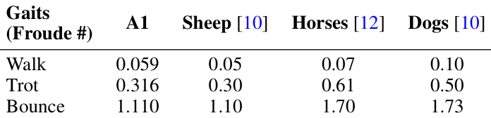
Froude Number Analysis: In Biomechanics, Froude number \(F\) is a scalar metric characterizing gaits of quadrupeds and bipeds [18]. Concretely, \(F = v^2 / gh\), where \(v\) is the linear speed, \(g\) is the gravitational acceleration, and \(h\) is the height of the hip joint from the ground. Existing research shows that animals with a similar morphology but with different
弗劳德数分析：在生物力学中，弗劳德数 \(F\) 是表征四足动物和两足动物步态的标量指标 [18]。具体而言，\(F = v^2 / gh\)，其中 \(v\) 为线速度，\(g\) 为重力加速度，\(h\) 为髋关节距离地面的高度。现有研究表明，形态相似但体型不同的动物
Table 3: We compare the Froude numbers of our emergent gaits with other quadruped animals at their gait transition boundaries. Our policies are closest to sheep in all gaits and to horse in walking gait. Bounce includes canter and gallop.
表3：我们在步态转换边界处将我们涌现步态的弗劳德数与其他四足动物进行了比较。我们的策略在所有步态中均与羊最接近，在行走步态中与马最接近。弹跳包括慢跃步（canter）和袭步（gallop）。
sizes tend to use the same gait when walking with equal Froude numbers [26, 10]. We calculate the Froude numbers of our robot in the real world for the low, median and high speeds, and compare them with the Froude numbers of quadrupeds in nature – dogs, horses and sheep [12, 10]. We compare the Froude number of animals at the gait transition boundaries and observe that our robot is closest to the sheep in Table 3.
在以相同的弗劳德数行走时往往采用相同的步态 [26, 10]。我们计算了我们的机器人在现实世界中处于低速、中速和高速下的弗劳德数，并将它们与自然界中的四足动物——狗、马和羊的弗劳德数进行了比较 [12, 10]。我们在步态转换边界处比较了动物的弗劳德数，并在表3中观察到我们的机器人与羊最接近。
展开第 6 页原版整页（含全部图表、公式与页眉页脚）
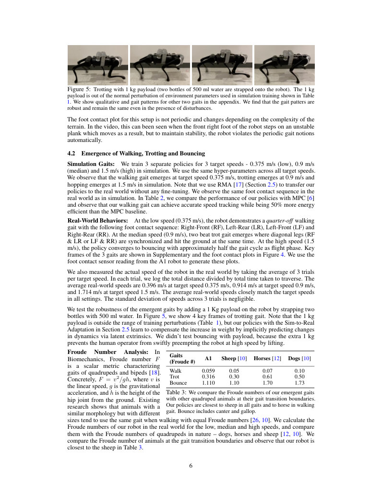
第 7 页Page 7PDF p.7
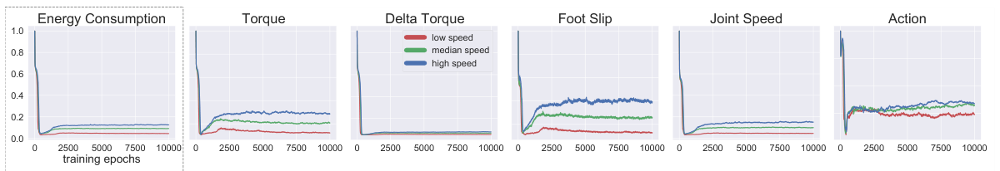
Figure 7: Energy consumption plot during training. Even though our reward function does not include the hand-designed locomotion penalties that are commonly used in prior works (torque, delta torque, foot slip, joint speed, and action), we show that all these penalties are minimized in our training framework as a byproduct of minimizing energy consumption.
图7：训练期间的能量消耗图。尽管我们的奖励函数没有包含以往工作中常用的手工设计的运动惩罚项（力矩、力矩变化量、足端打滑、关节速度和动作），但我们证明，在我们的训练框架中，所有这些惩罚项都作为最小化能量消耗的副产物被最小化了。
4.3 Gait Transition via a Velocity-Conditioned Policy
4.3 通过速度条件化策略实现步态转换
We have shown walking, trotting and bouncing emerged at three different target speeds. To demonstrate foot patterns at a continuous range of velocities, we propose a learning scheme (Figure 6) for a velocity-conditioned policy that enables smooth gait transition when the command velocity changes.
我们已经展示了行走、小跑和弹跳在三个不同的目标速度下涌现。为了展示在连续速度范围内的足端模式，我们提出了一种针对速度条件化策略的学习方案（图6），该方案能在指令速度变化时实现平滑的步态转换。
Naive Multi-Task Training Fails: We first tried the naive approach to train the velocityconditioned policy in a multi-task fashion by randomly sampling desired velocities and using the corresponding velocity-conditioned reward (Section 2.4). However, this did not work and the resulting emerged gaits collapse to only two modes: walking and trotting, but trotting at high speeds is not energy-efficient (Figure 2). We believe the reason for failure is difficulty in optimization as the robot is now tasked not only to learn to move forward but also do it by learning different gaits which causes it to collapse.
朴素多任务训练失败：我们首先尝试了以多任务方式训练速度条件化策略的朴素方法，即随机采样目标速度并使用相应的速度条件化奖励（第2.4节）。然而，这种方法并未奏效，最终涌现的步态坍缩为仅有两种模式：行走和小跑，但在高速下小跑是不节能的（图2）。我们认为失败的原因在于优化困难，因为机器人现在不仅要学会向前移动，还要通过学习不同步态来实现，这导致了其坍缩。
Learning via Distillation and RL: We sidestep this issue via stage-wise distillation approach. We first train our fixed-velocity policies as described in the paper which lead to walking, trotting and bouncing (galloping) gaits. We then treat these policies as exBouncing Policy perts and collect demonstration Encoder ( π bouncing) data from them to self-supervise xt , at −1 Encoder ( μ bouncing) Trotting Policy ( π trotting) at ̂ and bootstrap the initial training Mass, CoM, Encoder ( μ trotting) Walking Policy ( π walking) SimulationPhysics phase of the velocity-conditionedpolicy. These three policies serve Friction, Motor Strength( et ) ( μ walking) L2 Loss as experts at three velocities at low (0.375 m/s), median (0.9 xt −20, at −21 m/s) and high (1.5 m/s), repreAdaptation Module ( ϕ ) Velocity-Conditioned Policy ( Π ) at sented as three-dimensional one- xt −1, at −2 } hot vectors, which are fed into Command Velocity { or or or OR rt the velocity-conditioned policy as input. Expert supervisions Figure 6: Learning scheme for smooth gait transition. Trainable modules along with the RL rewards guide are in red. red.. The blue path indicates forward and backward passes for the blue path indicates forward and backward passes for the path indicates forward and backward passes for the L2 loss on action, whereas the green path is for training by RL. green path is for training by RL. path is for training by RL. the velocity-conditioned policy
通过蒸馏和强化学习进行学习：我们通过分阶段蒸馏方法规避了这一问题。我们首先按照文中所述训练固定速度策略，从而得到行走、小跑和弹跳（袭步）步态。然后我们将这些策略视为专家（exBouncing Policy perts），并从中收集演示数据（Encoder ( π bouncing) xt , at −1 Encoder ( μ bouncing) Trotting Policy ( π trotting) at ̂），以进行自监督并引导（Mass, CoM, Encoder ( μ trotting) Walking Policy ( π walking) SimulationPhysics Friction, Motor Strength( et ) ( μ walking) L2 Loss）速度条件化策略的初始训练阶段。这三个策略在低速（0.375 m/s）、中速（0.9 xt −20, at −21 m/s）和高速（1.5 m/s）下作为专家，表示为三维独热向量（repreAdaptation Module ( ϕ ) Velocity-Conditioned Policy ( Π ) at sented as three-dimensional one- xt −1, at −2 } hot vectors），并作为输入馈入速度条件化策略（Command Velocity { or or or OR rt）。专家监督（Expert supervisions 图6：平滑步态转换的学习方案。可训练模块为红色。red.. 蓝色路径表示动作上L2损失的前向和反向传播，而绿色路径用于强化学习训练。green path is for training by RL. path is for training by RL.）与强化学习奖励一同引导速度条件化策略
Figure 6: Learning scheme for smooth gait transition. Trainable modules are in red. red.. The blue path indicates forward and backward passes for the blue path indicates forward and backward passes for the path indicates forward and backward passes for the L2 loss on action, whereas the green path is for training by RL. green path is for training by RL. path is for training by RL.
图6：平滑步态转换的学习方案。可训练模块为红色。red.. 蓝色路径表示动作L2损失的前向和反向传播，而绿色路径用于通过强化学习训练。green path is for training by RL. path is for training by RL。
to follow the energy-efficient gaits at the three expert velocities. To learn motor skills and smooth gait transition at intermediate velocities in the continuous range of 0.375 m/s to 1.5 m/s, the learning relies on the velocity-conditioned RL rewards only without expert supervision. To represent a randomly sampled target velocity to feed into the policy, we use an interpolated vector based on the closest two experts’ one-hot velocity representations (e.g. 1.2 m/s is represented as [0, 0.5, 0.5] and 0.5 m/s as [0.238, 0.762, 0]). We linearly anneal the L2 supervision loss from the expert supervision (for the three velocity modes) as the training progresses. Towards the end, the learning relies only on the velocity-conditioned RL loss for the entire velocity range. Details are in the supplementary.
在三个专家速度下遵循高能效步态。为了在0.375 m/s到1.5 m/s的连续范围内学习中间速度下的运动技能和平滑步态转换，该学习仅依赖于速度条件化强化学习奖励，而无需专家监督。为了表示馈入策略的随机采样目标速度，我们基于最接近的两个专家的独热速度表示使用插值向量（例如，1.2 m/s表示为[0, 0.5, 0.5]，0.5 m/s表示为[0.238, 0.762, 0]）。随着训练的进行，我们对来自专家监督（针对三种速度模式）的L2监督损失进行线性退火。到训练后期，整个速度范围的学习仅依赖于速度条件化强化学习损失。详细信息见补充材料。
Real-World Smooth Gait Transition: We test our velocity-conditioned policy in the wild and want to highlight the smooth gait transition happening at different speeds. Video is in the supplementary.
现实世界平滑步态转换：我们在真实野外环境中测试了我们的速度条件化策略，并重点展示在不同速度下发生的平滑步态转换。视频见补充材料。
4.4 Ablation Studies
4.4 消融实验
The two key components we use during policy training to get reliable walking gaits is an energy based reward function, and a fractal terrain. We posit that these ingredients are minimal, and we demonstrate this by ablating each of them below.
我们在策略训练中用于获得可靠行走步态的两个关键组成部分是基于能量的奖励函数和分形地形。我们假定这些要素是最小完备的，并通过在下方分别消融它们来证明这一点。
Minimizing Energy Consumption Also Minimizes Artificial Penalties: To demonstrate the sufficiency of minimizing energy consumption, we plot the decreasing trend of the artificial penalties during training in Figure 7, even though these artificial penalties are not included in our reward function. These include Torque penalty, delta torque penalty, foot slip penalty, joint speed penalty, and
最小化能量消耗同时也能最小化人工设计的惩罚项：为了证明最小化能量消耗的充分性，我们在图7中绘制了训练期间人工惩罚项的下降趋势，尽管这些人工惩罚项并未包含在我们的奖励函数中。这些惩罚项包括力矩惩罚、力矩变化量惩罚、足端打滑惩罚、关节速度惩罚以及
展开第 7 页原版整页（含全部图表、公式与页眉页脚）
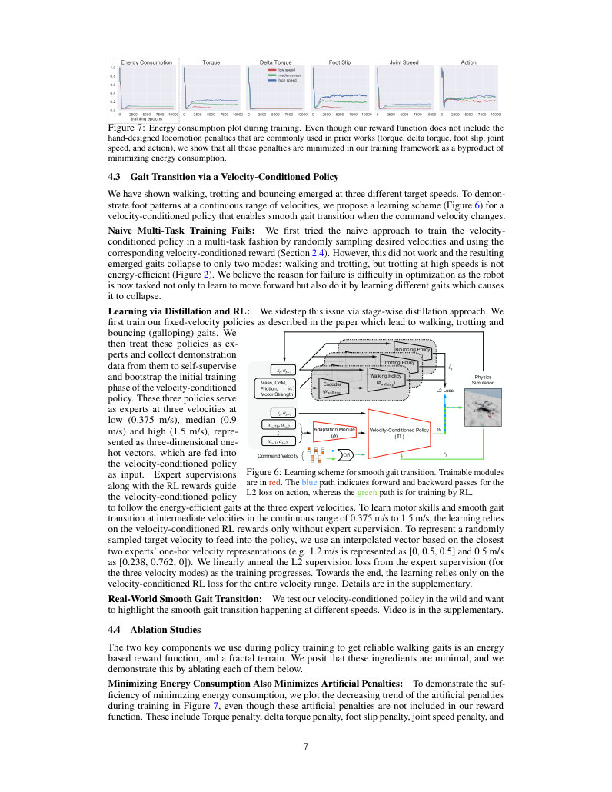
第 8 页Page 8PDF p.8
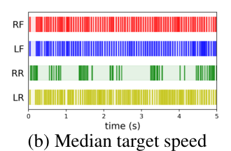
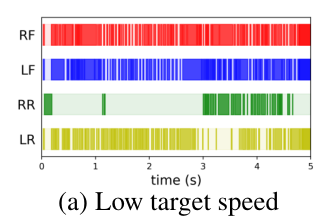
(a) Low target speed (b) Median target speed
(a) 低目标速度 (b) 中目标速度
(c) High target speed
(c) 高目标速度
Figure 8: Resulting gait plots of policies without minimizing energy consumption. All policies exhibit a high-frequency tapping behavior that is not energy-efficient and not transferable to robots in the real world. In (c), the robot in simulation falls off the terrain after 4 seconds.
图8：未最小化能量消耗训练策略的最终步态图。所有策略都表现出高频踏步行为，这种行为不仅能效低下，而且无法迁移到现实世界中的机器人上。在(c)中，仿真中的机器人在4秒后跌落出地形。
the action regularization [21, 27, 22, 28, 29]. A high positive correlation between energy consumption and artificial penalties can be observed. All these artificial penalties are minimized in our training framework as a byproduct of minimizing energy consumption. During training, the robot first learns to stand still with a minimal energy consumption (around epoch 500), and then starts moving forward with a slightly higher energy consumption.
动作正则化项 [21, 27, 22, 28, 29]。可以观察到能量消耗与人工惩罚项之间存在高度的正相关。在我们的训练框架中，所有这些人工惩罚项都作为最小化能量消耗的副产物被最小化了。在训练期间，机器人首先学会以极小的能量消耗保持静止站立（大约在第500轮），然后开始以略高的能量消耗向前移动。
Minimizing Energy Consumption: In Figure 8, we show the the resulting gaits of policies trained without the unit energy consumption term in the reward function. All policies show high-frequency tapping behaviors that are not natural and inefficient. The high-frequency joint movements can burn the joint motors in the robot and are not transferable to the real hardware.
最小化能量消耗：在图8中，我们展示了奖励函数中不包含单位能量消耗项所训练策略的最终步态。所有策略均表现出不自然且低效的高频踏步行为。高频关节运动可能会烧毁机器人内部的关节电机，因此无法迁移到真实的硬件上。
Fractal Terrain during Training: We train the policies with energy minimization (Section 2.4) but on a flat terrain without fractal perturbations (Section 2.3). All training trials converge to unnatural and unstable gaits. We found that adding fractal terrain also facilitates a larger foot clearance and robustness which improves real-world hardware deployment. We show the key frames of 2 example unnatural gaits in the supplementary.
训练期间的分形地形：我们采用能量最小化训练策略（第2.4节），但在没有分形扰动的平坦地形上进行（第2.3节）。所有训练试验均收敛到不自然且不稳定的步态。我们发现，添加分形地形还有助于获得更大的足端离地间隙和鲁棒性，从而改善现实世界中的硬件部署。我们在补充材料中展示了2种不自然步态示例的关键帧。
5 Related Works
5 相关工作
Model-Based Optimization for Gaits: Model-based controllers to generate gaits [6] optimize for the stance legs for a given foot contact sequence. They use predefined swing leg motion and show stable gait generation on a real robot system. One class of method is contact-implicit optimization [30, 31, 32], optimizing contact forces along with sequences. However, these gaits do not emerge as an energy-minimizing solution to moving at different speeds. [33] analyzes biped gaits by optimizing energy consumption, but uses a minimal mechanical model assuming point-mass body and massless legs. In contrast, our swing leg motion, stance leg force and contact sequence, all emerge from minimizing energy consumption of moving of a real robot. We take a functional approach to gaits where we achieve them not as predefined movements, but as a consequence of energy minimization.
基于模型的步态优化：用于生成步态的基于模型控制器 [6] 在给定足底接触时序的情况下对支撑腿进行优化。它们使用预定义的摆动腿运动，并在真实机器人系统上展示了稳定的步态生成。其中一类方法是隐式接触优化 [30, 31, 32]，其同时优化接触力与时序。然而，这些步态并非作为在不同速度下移动的能量最小化解而涌现。[33] 通过优化能量消耗分析了双足步态，但其使用的是假设质点机身和无质量腿的简化力学模型。相比之下，我们的摆动腿运动、支撑腿受力以及接触时序，全部通过最小化真实机器人移动的能耗而涌现。我们对步态采取了一种功能性方法，即并非将其实现为预定义的动作，而是作为能量最小化的结果。
Learning for Legged Locomotion and Gaits: Data-driven learning for legged locomotion has shown robust controllers for quadrupedal robots [22, 34, 35, 36, 37, 38]. Of these, [34, 22] focus on a controller on complex terrains but do not synthesize and analyze leg patterns of the robot across diverse gaits at different target speeds. [35] demonstrates a learning method to select gait controllers, but the low-level gait controllers are predefined primitives. Concurrent work [21] shows the learned gaits and gait transition, but their method relies on many human priors (e.g. predefined cyclic motion priors), shows trotting at high speed with short periods of flight phase, and requires powerful on-board computation power (Apple M1 chip) to solve online MPC optimization. In graphics, [39] shows low energy also plays a role in generating natural locomotion animations.
面向腿足运动与步态的学习方法：用于腿足运动的数据驱动学习已在四足机器人上展现出高鲁棒性的控制器 [22, 34, 35, 36, 37, 38]。在这些工作中，[34, 22] 专注于复杂地形上的控制器，但未在不同目标速度下合成与分析机器人在多样化步态下的腿部模式。[35] 展示了一种选择步态控制器的学习方法，但其底层步态控制器均为预定义的原语。同期工作 [21] 展示了学得的步态与步态转换，但其方法依赖于许多人类先验（例如预定义的周期性运动先验），表现为带有短暂腾空期的高速对角步（trotting），且需要强大的机载计算能力（Apple M1 芯片）来求解在线 MPC 优化。在图形学领域，[39] 表明低能耗在生成自然的运动动画中同样发挥着作用。
6 Conclusion
6 结论
This work demonstrates that energy consumption plays a key role in the emergence of natural locomotion patterns in animals by following an analysis-by-synthesis approach of showing the result in real quadruped robots. The allows generation of the straight line lab gaits, as well as unstructured complex terrain gaits in animals. We perform thorough analysis of gait patterns, show their robustness under disturbances, and propose a learning pipeline for smooth gait transition . Interestingly, the gaits obtained by our robot are most similar to those in horses and sheep – the animals which are close to it in terms of the Froude number metric space.
本项工作通过“以合成促分析”（analysis-by-synthesis）的方法并在真实四足机器人上展示其结果，证明了能耗在动物自然运动模式的涌现中起着关键作用。该方法既能生成实验室中的直线行走步态，也能生成动物在非结构化复杂地形下的步态。我们对步态模式进行了深入分析，展示了其在扰动下的鲁棒性，并提出了一种用于平滑步态转换的学习流水线。有趣的是，我们机器人所获得的步态与马和羊的步态最为相似——在弗劳德数（Froude number）度量空间中，这些动物与该机器人的距离最为接近。
Acknowledgments This work was supported by the DARPA Machine Common Sense program. DP is partly supported by Good AI research grant. We would like to thank Chris Atkeson for high-quality feedback, and Qingqing Zhao and Shivam Duggal for many video recordings.
致谢 本项工作得到了 DARPA 机器常识（Machine Common Sense）计划的资助。DP 部分受到 Good AI 研究资助。我们要感谢 Chris Atkeson 提供的高质量反馈，以及 Qingqing Zhao 和 Shivam Duggal 录制的大量视频。
展开第 8 页原版整页（含全部图表、公式与页眉页脚）
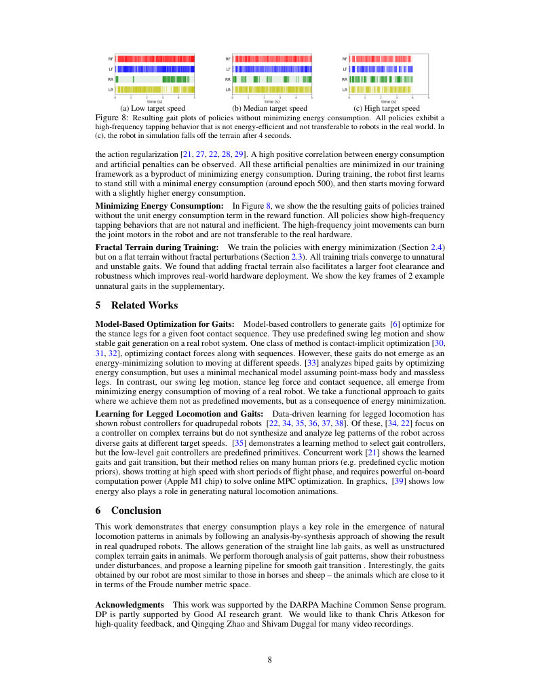
第 9 页Page 9PDF p.9
References
References
- [1] E. Muybridge. The horse in motion. Library of Congress Prints and Photographs Division , 1878. URL `http://www.loc.gov/pictures/resource/ppmsca.23778/` .
- [1] E. Muybridge. The horse in motion. Library of Congress Prints and Photographs Division , 1878. URL `http://www.loc.gov/pictures/resource/ppmsca.23778/` .
- [2] M. Hildebrand. Symmetrical gaits of horses. Science , 1965.
- [2] M. Hildebrand. Symmetrical gaits of horses. Science , 1965.
- [3] M. H. Raibert. Trotting, pacing and bounding by a quadruped robot. Journal of biomechanics , 23:79–98, 1990.
- [3] M. H. Raibert. Trotting, pacing and bounding by a quadruped robot. Journal of biomechanics , 23:79–98, 1990.
- [4] D. W. Marhefka, D. E. Orin, J. P. Schmiedeler, and K. J. Waldron. Intelligent control of quadruped gallops. IEEE/ASME Transactions On Mechatronics , 8(4):446–456, 2003.
- [4] D. W. Marhefka, D. E. Orin, J. P. Schmiedeler, and K. J. Waldron. Intelligent control of quadruped gallops. IEEE/ASME Transactions On Mechatronics , 8(4):446–456, 2003.
- [5] P. Eckert, A. Sprowitz, H. Witte, and A. J. Ijspeert.¨ Comparing the effect of different spine and leg designs for a small bounding quadruped robot. In 2015 IEEE International Conference on Robotics and Automation (ICRA) , pages 3128–3133. IEEE, 2015.
- [5] P. Eckert, A. Sprowitz, H. Witte, and A. J. Ijspeert.¨ Comparing the effect of different spine and leg designs for a small bounding quadruped robot. In 2015 IEEE International Conference on Robotics and Automation (ICRA) , pages 3128–3133. IEEE, 2015.
- [6] J. Di Carlo, P. M. Wensing, B. Katz, G. Bledt, and S. Kim. Dynamic locomotion in the mit cheetah 3 through convex model-predictive control. In 2018 IEEE/RSJ International Conference on Intelligent Robots and Systems (IROS) . IEEE, 2018.
- [6] J. Di Carlo, P. M. Wensing, B. Katz, G. Bledt, and S. Kim. Dynamic locomotion in the mit cheetah 3 through convex model-predictive control. In 2018 IEEE/RSJ International Conference on Intelligent Robots and Systems (IROS) . IEEE, 2018.
- [7] K. E. Adolph, W. G. Cole, M. Komati, J. S. Garciaguirre, D. Badaly, J. M. Lingeman, G. L. Chan, and R. B. Sotsky. How do you learn to walk? thousands of steps and dozens of falls per day. Psychological science , 2012.
- [7] K. E. Adolph, W. G. Cole, M. Komati, J. S. Garciaguirre, D. Badaly, J. M. Lingeman, G. L. Chan, and R. B. Sotsky. How do you learn to walk? thousands of steps and dozens of falls per day. Psychological science , 2012.
- [8] W. G. Cole, S. R. Robinson, and K. E. Adolph. Bouts of steps: The organization of infant exploration. Developmental psychobiology , 2016.
- [8] W. G. Cole, S. R. Robinson, and K. E. Adolph. Bouts of steps: The organization of infant exploration. Developmental psychobiology , 2016.
- [9] D. L. Kramer and R. L. McLaughlin. The behavioral ecology of intermittent locomotion. American Zoologist , 2001.
- [9] D. L. Kramer and R. L. McLaughlin. The behavioral ecology of intermittent locomotion. American Zoologist , 2001.
- [10] A. Jayes and R. M. Alexander. Mechanics of locomotion of dogs (canis familiaris) and sheep (ovis aries). Journal of Zoology , 1978.
- [10] A. Jayes and R. M. Alexander. Mechanics of locomotion of dogs (canis familiaris) and sheep (ovis aries). Journal of Zoology , 1978.
- [11] Z. Afelt, J. Blaszczyk, and C. Dobrzecka. Speed control in animal locomotion: transitions between symmetrical and nonsymmetrical gaits in the dog. Acta Neurobiol Exp , 1983.
- [11] Z. Afelt, J. Blaszczyk, and C. Dobrzecka. Speed control in animal locomotion: transitions between symmetrical and nonsymmetrical gaits in the dog. Acta Neurobiol Exp , 1983.
- [12] D. F. Hoyt and C. R. Taylor. Gait and the energetics of locomotion in horses. Nature , 1981.
- [12] D. F. Hoyt and C. R. Taylor. Gait and the energetics of locomotion in horses. Nature , 1981.
- [13] R. M. Alexander and A. Jayes. A dynamic similarity hypothesis for the gaits of quadrupedal mammals. Journal of zoology , 201(1):135–152, 1983.
- [13] R. M. Alexander and A. Jayes. A dynamic similarity hypothesis for the gaits of quadrupedal mammals. Journal of zoology , 201(1):135–152, 1983.
- [14] J. E. Bertram. Constrained optimization in human walking: cost minimization and gait plasticity. Journal of experimental biology , 208(6):979–991, 2005.
- [14] J. E. Bertram. Constrained optimization in human walking: cost minimization and gait plasticity. Journal of experimental biology , 208(6):979–991, 2005.
- [15] D. T. Polet, R. T. Schroeder, and J. E. Bertram. Reducing gravity takes the bounce out of running. Journal of Experimental Biology , 221(3), 2018.
- [15] D. T. Polet, R. T. Schroeder, and J. E. Bertram. Reducing gravity takes the bounce out of running. Journal of Experimental Biology , 221(3), 2018.
- [16] D. T. Polet and J. E. Bertram. An inelastic quadrupedal model discovers four-beat walking, two-beat running, and pseudo-elastic actuation as energetically optimal. PLoS computational biology , 2019.
- [16] D. T. Polet and J. E. Bertram. An inelastic quadrupedal model discovers four-beat walking, two-beat running, and pseudo-elastic actuation as energetically optimal. PLoS computational biology , 2019.
- [17] A. Kumar, Z. Fu, D. Pathak, and J. Malik. RMA: Rapid Motor Adaptation for Legged Robots. In Robotics: Science and Systems , 2021.
- [17] A. Kumar, Z. Fu, D. Pathak, and J. Malik. RMA: Rapid Motor Adaptation for Legged Robots. In Robotics: Science and Systems , 2021.
- [18] C. L. Vaughan and M. J. O’Malley. Froude and the contribution of naval architecture to our understanding of bipedal locomotion. Gait & posture , 2005.
- [18] C. L. Vaughan and M. J. O’Malley. Froude and the contribution of naval architecture to our understanding of bipedal locomotion. Gait & posture , 2005.
- [19] J. Tan, T. Zhang, E. Coumans, A. Iscen, Y. Bai, D. Hafner, S. Bohez, and V. Vanhoucke. Sim-to-real: Learning agile locomotion for quadruped robots. In Robotics: Science and Systems , 2018.
- [19] J. Tan, T. Zhang, E. Coumans, A. Iscen, Y. Bai, D. Hafner, S. Bohez, and V. Vanhoucke. Sim-to-real: Learning agile locomotion for quadruped robots. In Robotics: Science and Systems , 2018.
- [20] X. Song, Y. Yang, K. Choromanski, K. Caluwaerts, W. Gao, C. Finn, and J. Tan. Rapidly adaptable legged robots via evolutionary meta-learning. In International Conference on Intelligent Robots and Systems (IROS) , 2020.
- [20] X. Song, Y. Yang, K. Choromanski, K. Caluwaerts, W. Gao, C. Finn, and J. Tan. Rapidly adaptable legged robots via evolutionary meta-learning. In International Conference on Intelligent Robots and Systems (IROS) , 2020.
展开第 9 页原版整页（含全部图表、公式与页眉页脚）
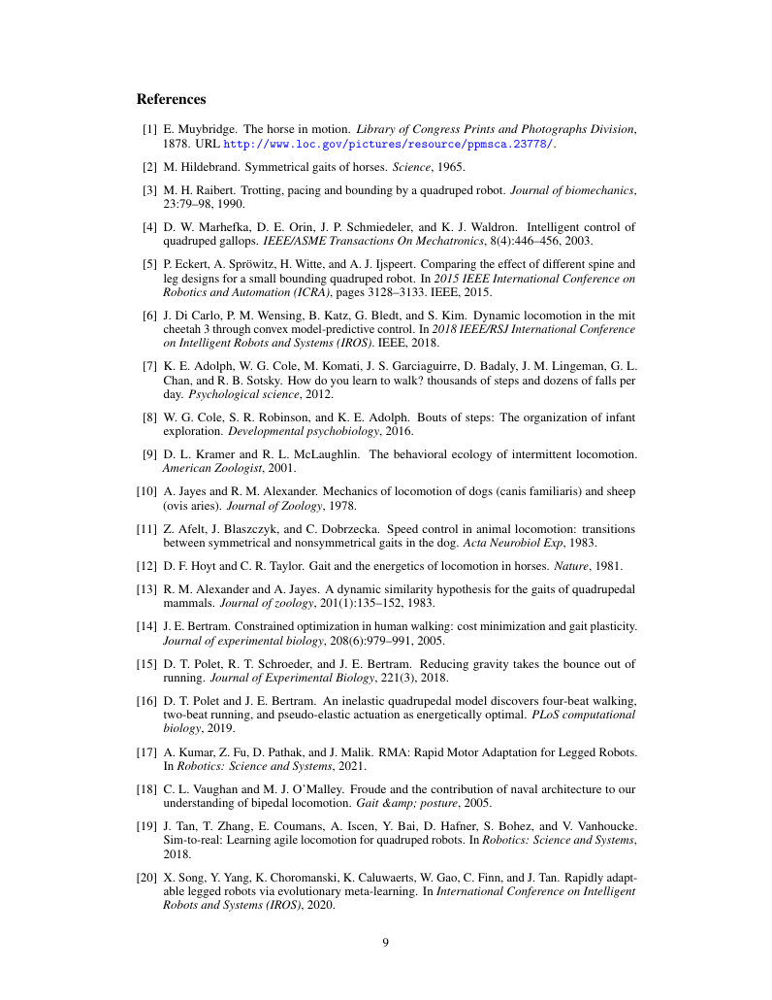
第 10 页Page 10PDF p.10
- [21] Y. Yang, T. Zhang, E. Coumans, J. Tan, and B. Boots. Fast and efficient locomotion via learned gait transitions. In 5th Annual Conference on Robot Learning (CoRL) , 2021.
- [21] Y. Yang, T. Zhang, E. Coumans, J. Tan, and B. Boots. Fast and efficient locomotion via learned gait transitions. In 5th Annual Conference on Robot Learning (CoRL) , 2021.
- [22] J. Hwangbo, J. Lee, A. Dosovitskiy, D. Bellicoso, V. Tsounis, V. Koltun, and M. Hutter. Learning agile and dynamic motor skills for legged robots. Science Robotics , 2019.
- [22] J. Hwangbo, J. Lee, A. Dosovitskiy, D. Bellicoso, V. Tsounis, V. Koltun, and M. Hutter. Learning agile and dynamic motor skills for legged robots. Science Robotics , 2019.
- [23] X. Wang. Unitree Robotics. `https://www.unitree.com/` .
- [23] X. Wang. Unitree Robotics. `https://www.unitree.com/` .
- [24] J. Hwangbo, J. Lee, and M. Hutter. Per-contact iteration method for solving contact dynamics. IEEE Robotics and Automation Letters , 2018. URL `www.raisim.com` .
- [24] J. Hwangbo, J. Lee, and M. Hutter. Per-contact iteration method for solving contact dynamics. IEEE Robotics and Automation Letters , 2018. URL `www.raisim.com` .
- [25] J. Schulman, F. Wolski, P. Dhariwal, A. Radford, and O. Klimov. Proximal policy optimization algorithms. arXiv preprint arXiv:1707.06347 , 2017.
- [25] J. Schulman, F. Wolski, P. Dhariwal, A. Radford, and O. Klimov. Proximal policy optimization algorithms. arXiv preprint arXiv:1707.06347 , 2017.
- [26] R. M. Alexander. The gaits of bipedal and quadrupedal animals. The International Journal of Robotics Research , 1984.
- [26] R. M. Alexander. The gaits of bipedal and quadrupedal animals. The International Journal of Robotics Research , 1984.
- [27] W. Yu, V. C. V. Kumar, G. Turk, and C. K. Liu. Sim-to-real transfer for biped locomotion. In 2019 IEEE/RSJ International Conference on Intelligent Robots and Systems . IEEE, 2019.
- [27] W. Yu, V. C. V. Kumar, G. Turk, and C. K. Liu. Sim-to-real transfer for biped locomotion. In 2019 IEEE/RSJ International Conference on Intelligent Robots and Systems . IEEE, 2019.
- [28] S. Gangapurwala, M. Geisert, R. Orsolino, M. Fallon, and I. Havoutis. Real-time trajectory adaptation for quadrupedal locomotion using deep reinforcement learning. In International Conference on Robotics and Automation (ICRA) , 2021.
- [28] S. Gangapurwala, M. Geisert, R. Orsolino, M. Fallon, and I. Havoutis. Real-time trajectory adaptation for quadrupedal locomotion using deep reinforcement learning. In International Conference on Robotics and Automation (ICRA) , 2021.
- [29] W. Yu, J. Tan, C. K. Liu, and G. Turk. Preparing for the unknown: Learning a universal policy with online system identification. In Robotics: Science and Systems , 2017.
- [29] W. Yu, J. Tan, C. K. Liu, and G. Turk. Preparing for the unknown: Learning a universal policy with online system identification. In Robotics: Science and Systems , 2017.
- [30] Z. Manchester and S. Kuindersma. Variational contact-implicit trajectory optimization. In Robotics Research . Springer, 2020.
- [30] Z. Manchester and S. Kuindersma. Variational contact-implicit trajectory optimization. In Robotics Research . Springer, 2020.
- [31] M. Posa, C. Cantu, and R. Tedrake. A direct method for trajectory optimization of rigid bodies through contact. The International Journal of Robotics Research , 2014.
- [31] M. Posa, C. Cantu, and R. Tedrake. A direct method for trajectory optimization of rigid bodies through contact. The International Journal of Robotics Research , 2014.
- [32] I. Mordatch, Z. Popovic, and E. Todorov.´ Contact-invariant optimization for hand manipulation. In Proceedings of the ACM SIGGRAPH/Eurographics symposium on computer animation , 2012.
- [32] I. Mordatch, Z. Popovic, and E. Todorov.´ Contact-invariant optimization for hand manipulation. In Proceedings of the ACM SIGGRAPH/Eurographics symposium on computer animation , 2012.
- [33] M. Srinivasan and A. Ruina. Computer optimization of a minimal biped model discovers walking and running. Nature , 2006.
- [33] M. Srinivasan and A. Ruina. Computer optimization of a minimal biped model discovers walking and running. Nature , 2006.
- [34] J. Lee, J. Hwangbo, L. Wellhausen, V. Koltun, and M. Hutter. Learning quadrupedal locomotion over challenging terrain. Science robotics , 2020.
- [34] J. Lee, J. Hwangbo, L. Wellhausen, V. Koltun, and M. Hutter. Learning quadrupedal locomotion over challenging terrain. Science robotics , 2020.
- [35] X. Da, Z. Xie, D. Hoeller, B. Boots, A. Anandkumar, Y. Zhu, B. Babich, and A. Garg. Learning a contact-adaptive controller for robust, efficient legged locomotion. arXiv preprint arXiv:2009.10019 , 2020.
- [35] X. Da, Z. Xie, D. Hoeller, B. Boots, A. Anandkumar, Y. Zhu, B. Babich, and A. Garg. Learning a contact-adaptive controller for robust, efficient legged locomotion. arXiv preprint arXiv:2009.10019 , 2020.
- [36] T. Haarnoja, S. Ha, A. Zhou, J. Tan, G. Tucker, and S. Levine. Learning to walk via deep reinforcement learning. arXiv preprint arXiv:1812.11103 , 2018.
- [36] T. Haarnoja, S. Ha, A. Zhou, J. Tan, G. Tucker, and S. Levine. Learning to walk via deep reinforcement learning. arXiv preprint arXiv:1812.11103 , 2018.
- [37] X. B. Peng, E. Coumans, T. Zhang, T.-W. E. Lee, J. Tan, and S. Levine. Learning agile robotic locomotion skills by imitating animals. In Robotics: Science and Systems , 2020.
- [37] X. B. Peng, E. Coumans, T. Zhang, T.-W. E. Lee, J. Tan, and S. Levine. Learning agile robotic locomotion skills by imitating animals. In Robotics: Science and Systems , 2020.
- [38] G. B. Margolis, T. Chen, K. Paigwar, X. Fu, D. Kim, S. bae Kim, and P. Agrawal. Learning to jump from pixels. In 5th Annual Conference on Robot Learning (CoRL) , 2021.
- [38] G. B. Margolis, T. Chen, K. Paigwar, X. Fu, D. Kim, S. bae Kim, and P. Agrawal. Learning to jump from pixels. In 5th Annual Conference on Robot Learning (CoRL) , 2021.
- [39] W. Yu, G. Turk, and C. K. Liu. Learning symmetric and low-energy locomotion. ACM Transactions on Graphics (TOG) , 2018.
- [39] W. Yu, G. Turk, and C. K. Liu. Learning symmetric and low-energy locomotion. ACM Transactions on Graphics (TOG) , 2018.
展开第 10 页原版整页（含全部图表、公式与页眉页脚）
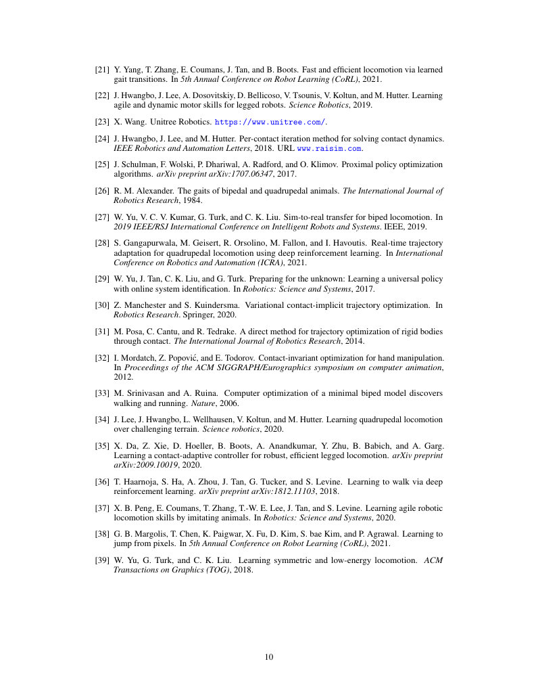
原文署名：Zipeng Fu, Ashish Kumar, Jitendra Malik, Deepak Pathak. Minimizing Energy Consumption Leads to the Emergence of Gaits in Legged Robots. PMLR 164:928–937, 2022 (CoRL 2021). 原始出版物 · CC BY 4.0。本站新增中文机器译文与阅读排版。